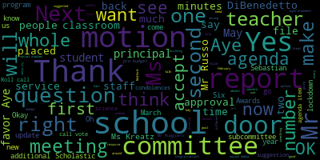
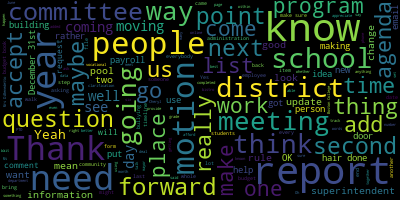
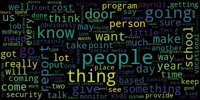
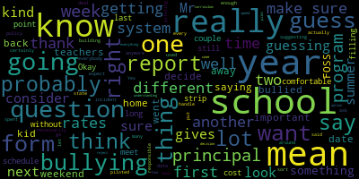
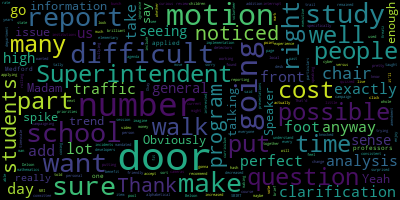

AI-generated transcript of Medford School Committee meeting April 9, 2018
English | español | português | 中国人 | kreyol ayisyen | tiếng việt | ខ្មែរ | русский | عربي | 한국인
Back to all transcripts
Heatmap of speakers
[Mustone]: Please forgive me if I stumble on some motions or the verbiage. Mr. Rousseau did try to get me a cheat sheet of Robert's Rules of Rights. We couldn't find it. So, let's stand for the Pledge of Allegiance, please.
[Unidentified]: I pledge allegiance to the flag of the United States of America, and to the republic for which it stands, one nation, under God, indivisible, with liberty and justice for all.
[Mustone]: So first is the approval of minutes of the March 19, 2018 meeting. Roll call vote. Attendance first.
[Kreatz]: Thank you. Ms. Kreatz. Attendance. OK. Mrs. DiVentado. Present. Mrs. Kreatz, here. Mrs. Mustone. Here. Mr. Ruggiero.
[SPEAKER_09]: Present. Mr. Russo. Present.
[Kreatz]: Mrs. Van de Koot.
[SPEAKER_09]: Present.
[Mustone]: Mayor Burke. which is the item number one. Approval of minutes of March 19th. Motion to approve. Second.
[Kreatz]: We'll call the vote. Mrs. DiBenedetto? Yes. Mrs. Kreatz? Yes. Mrs. Mustone? Yes. Mr. Ruggiero?
[Unidentified]: Yes.
[Kreatz]: Mr. Russo? Yes. Mrs. Vanderkoop? Yes. Mayor Burke? Absent.
[DiBenedetto]: Mrs. DiBenedetto? I just did have one comment. I did notice that there was a request for a report of who will be in charge of monitoring and keeping the online PTO, PTG friends of organizations. Like who in the administration? You're going to, just on a report list, on the back of the report list, during our meeting last time, we asked that someone be assigned the role of implementing or overseeing the PTO, PTG, new online thing. Like who an administration or what administrative assistant or executive assistant.
[Belson]: We'll have an answer for you very soon.
[DiBenedetto]: Yeah, so I just wanted you to add it to the report list so that way we don't forget. Not that I forget anything.
[Mustone]: Who will be the administrator overseeing the PTO page?
[DiBenedetto]: Yes. It's the website page that organizations will be starting in October. So that was the only thing I saw from the minutes. Thank you.
[Mustone]: Next is the approval of bills and transfer funds. Motion for approval? Motion. Second.
[SPEAKER_09]: Second. A roll call vote. Mrs. DiBenedetto? Yes. Mrs. Kreatz? Yes. Mrs. Mustone? Yes. Mr. Ruggiero?
[Unidentified]: Yes.
[SPEAKER_09]: Mr. Russo? Yes. Mrs. Vandiver? Yes. Mayor Burke? Passed. Six, yes, one absent. Next is the approval of payrolls. Motion of approval?
[SPEAKER_16]: Second. Wait, can I just, I'm sorry, my papers are out of order. Can we go back to bills?
[DiBenedetto]: I did have one question on the bills. On page, I don't know if Ms. Patterson has a moment. On page nine of 14, there is a, it says trustees of Boston College for $15,000. It says Nellie Mae Foundation unclassified. I just don't know what that is. I don't think I've seen it before.
[Patterson]: That's correct. It was a one-time award last fall for Tim Klein as he received the award through the Nellie Mae Foundation. And the program and partnership that he worked with for the purchase and services for that award was the trustees of Boston College. So he received $15,000? The school district received $15,000 on behalf of his award for teacher leadership. That was presented and approved at the school committee meeting in October. We received the funds, and they were in turn paid out to the organization that he partnered with.
[DiBenedetto]: Oh, so the Nellie Mae Foundation is who he partnered with?
[Patterson]: No, Boston Public, the vendor that issued the payment. Nellie Mae Foundation awarded the funds initially.
[DiBenedetto]: Yeah, I know that Boston College got the $15,000. What was that? How did that? What was it about? Could you just?
[Belson]: That was that Empower program where they were having kids do more things to help the kids who were not doing as well to get some additional assistance.
[DiBenedetto]: OK, so he won this award, won $15,000. He used that to have Boston College come in and do a program with our students, and this is just the payment for it. OK. Thank you. I'd just like to get the whole story. Thank you.
[Mustone]: So now on to approval of payrolls.
[DiBenedetto]: Motion to approve. Second.
[Mustone]: Second. Roll call vote. Yes.
[Kreatz]: Mrs. DiBenedetto. Yes. Mrs. Kreatz. Yes. Mrs. Mastone. Yes. Mr. Ruggiero. Yes. Mr. Russo. Yes. Mrs. Van der Kloot. Yes. Mayor Burke. Absent. Absent.
[Mustone]: Six yes, one absent. Yes.
[Kreatz]: Next is the report of the secretary. Ms. Pretz? Yes. So I have two reports this week. The first report is regarding the Medford Malden Lodge of Elks scholarships. On Sunday, March 18, the Medford Malden Lodge of Elks held its 34th annual 2018-19 scholarship award ceremony. A total of 15 high school seniors from various local high schools including Medford High School and Medford Vocational Technical High School, Andover High School, Malden High School, Matanon, and Arlington Catholic were awarded a $500 scholarship. The students who received these awards were honored for their exceptional academic achievement and their commitment to community support. The ceremony began with a breakfast for all invited guests, their families, and friends. The award ceremony included a brief summary of each recipient's essay and a mention from their guidance Councilors, recommendation letter. Each recipient received a framed certificate proudly presented by Medford Malden Elks, BPOE number 1915. Many thanks to the Lodge Scholarship Committee for their 34 years of continued commitment to students at Medford High School in various local high schools within the area. The Lodge Committee Elks members present were Warren Costa, Lawrence Murphy, Paul Herbert, and Mary Fitzgerald. It was a wonderful event that I was invited to, and I was very happy to share this information, and I actually contacted the paper, and they put the picture of the students in the paper, and this award ceremony, we'll get to hear the names of the students who were awarded their certificates. So I currently don't have their names, but they will be released once the awards come out in May. Thank you. Thank you very much. The Mifflin Baldwin Lodge of Elks. Really appreciate it.
[Mustone]: Um, now report on March vouchers.
[Kreatz]: Yes. So I have a report to share with the committee regarding the, um, probably like the expenditures for the month of March. I signed up on the typical invoices related to heating, electricity, and pupil transportation. Also, there were some miscellaneous invoices, including violin repairs, interpreter invoices, and an invoice from the MASC for the Summit of Poverty, which Mr. Russo attended. Also highlights from the March 23rd bill. So what I like to do is I like to kind of find something that might be interesting and I kind of pick it out of the invoices and do a little write up on it. So I signed up on a payment to Essex North Shore Agricultural Technical High School in the amount of $35,295. Currently, there are four students enrolled in Essex Aggie. Two students are enrolled in horticulture, and they are in grades 10 and 12. One student is enrolled in environmental science and technology, grade 11. And one student is enrolled in animal science, grade 11. Then the week of March 30th, I signed off on four invoices, totaling $15,646. for Ronald C. Boyer, who was electrical fire alarms. And what they did was they worked on Bistro 489 to download new fire alarm system software to eliminate invalid reports. The invoice was $3,050. There was also work done to connect a new sprinkler system in the cafe to the fire alarm system for $2,806. There was also work at the Bistro to relocate the fire alarm pull stations in Horn Strobe for new floor plans. The invoice was $550. And then there was a third final payment from an invoice of $28,000. Work performed to install the new fire alarm circuit and replace existing devices in the new vocational bistro. And that was dated March 5. And so the final payment for that was the $9,240. So that was just a summary of some highlights from the month of March. Thank you, Ms. Kreatz.
[Mustone]: Ms. van de Kloot and then Ms. DiBenedetto.
[Van der Kloot]: Yes, I just want to thank Mrs. Kreatz for that report and the interesting way she's presenting to us. That's great.
[DiBenedetto]: Yep, you're welcome. Ms. DiBenedetto. Kathy, I like these reports because they bring out some questions I'd like to ask the superintendent. OK. So I'd like an update on the cafe and when it's opening, the bistro, rather, the bistro. So use the cafe. Bistro 489. Where are we with that? And when can people go up there and have lunch and hang out on the deck?
[Belson]: Want to answer that? OK. So Bistro 489 is well on its way. There are a few more things that have to happen. There are some parts that were not immediately available. We're also adjusting the bathroom for security reasons so you can go directly from the bistro into the bathroom rather than going into the corridor. There have been a couple of events up there, but we're very close. And I believe that this Friday, I want to make a tentative announcement, but this Friday prior to the marathon, The Crystal Campbell Foundation will probably have some event there Friday morning, and I'll give you information about that tomorrow when I get that straightened away. So it's operational to a degree, but full operation probably another week or so.
[DiBenedetto]: Thank you for the update.
[Ruseau]: Okay.
[Mustone]: Mr. Ruseaul?
[Ruseau]: Yeah, Mr. Ruseaul. Has the issue with the prep table been resolved at this point? I'm sorry?
[Mustone]: Has the prep table arrived? Yes. Any other questions on the Secretary's report? A motion to accept?
[DiBenedetto]: Motion to accept both reports and place them on file. Second.
[Mustone]: A roll call vote?
[Kreatz]: Yes. Seconded. Mrs. DiBenedettino? Yes. Mrs. Kreatz? Yes. Mrs. Stone? Yes. Mr. Ruggiero? Yes. Mr. Russo? Yes. Mrs. Van De Koop? Yes. Mayor Burke? Absent.
[Mustone]: Next on the agenda is the buildings and grounds subcommittee report, which I am the chair of. So in the interest of time, because we were delayed starting this meeting, we had a committee of the whole meeting before this about the superintendent search. I am going to briefly talk about some highlights. We did have a very productive meeting with 23 people at attendance. They were principals, administrators, parents, school committee members. Once we vote on this, this will be online so you can read it. It does include highlights that every principal of every school had sent to me of what they've done since that February. meeting asking for some updates to security that had been questioned and then some proposals or suggestions that people gave to us that we are looking into now. One is that to re-evaluate the STARS program, Alice has been looked into and we're still moving forward in seeing how ALICE works in the school system with professional development and the cost, but also was suggested by the teacher union president to re-evaluate STARS. Number two, someone talked about in our schools, the doors can only be opened on one side, so they sell these magnetic strips that are $3.25 that you would put on the classroom door, so that your door, you can go in and out, except when, unfortunately, if there was a time that we would have to have a lockdown, the magnetic strip would come off. So the teacher wouldn't have to unlock the door from one side. I don't understand it unless I have to get out and see the classroom door. Three was additional adjustment Councilors. Four was a safety committee. and each school, not just a district-wide safety committee, but each school because they are such different physical plants and they have their own concerns that each school should have one. Five was classroom keys in the main office for substitutes. That is a concern that I don't know if it was a teacher or a principal had brought to us. that if a substitute is in, if there was a lockdown situation, they wouldn't have the keys. Number six was number on all the doors. So if the fire department is called, all the doors, both internally and externally, would be numbered. So if the teacher's on the inside and is down one hallway, they can say what door they're at, and that same exit door would be on the outside. Number 7 would be additional method police officers assigned to schools. 8 was additional social and emotional training for all staff. 9 was additional walkie-talkies. 10 was keyless entry for staff and faculty. What it was described to me was almost a tap card and that would be to end the main building the front doors itself because right now custodians are the ones who let teachers in who arrive early. It could be for hallways, it could be for classrooms, so tap cards I think is the more casual language. 11 is security training for both the before school staff and the after school staff and the early childhood staff. 12 was to have a standing security concern agenda item on the buildings and grounds subcommittee. 13 was information for new students. This was brought by a city employee that said if a student, if we do drills, say in the fall, and a student transfers to our school mid-year, to have, to make sure that new orientation for students, that they're up to date with what their safety protocol would be at their school. Number 14 is emergency kits for lockdown situations that teachers would have in their classroom. And 15 was to make sure suggestions for children who have an IEP that services they would need during a lockdown is included on their IEP. If you have any questions, please feel free to email me, and this, after we discuss it, will be posted for, you can see what every school has been doing. Ms. DiBenedetto.
[DiBenedetto]: Thank you so much. It was a really great meeting. I appreciate all the work on the committee. And these suggestions, I'd like them to move a lot of these suggestions forward directly to our Buildings and Grounds Director, John. to the numbers on the doors, those are minimal cost. And doing those type of facility upgrades and have a date for them to be set up for September maybe if you can, I don't know, get our team together over the summer. Just put some goals in place and date timelines on them and what our next steps are and when we're gonna meet again to go over everything and make sure that all follow through has happened. But the ideas that came out and whether or not we use ALICE or STARS or another program, we do need a program district-wide. I feel like we should all be using the same language. I feel like we all need to have the same number of looks on every building from K through 12 district-wide. things implemented so that everybody, as they're moving up, if you learn it in third grade, you know it in fourth grade, you know it in fifth grade, so you're just constantly getting the same information year after year, and it's second thought. And we label things, the words. We use the words of what's happening. I think that's the most important thing. So through you to the superintendent, about moving this to security, moving it to facilities, that's my motion on the floor, and to put some date timelines on this.
[Belson]: So our intent is to take each one of these items, do a cost analysis, and do a feasibility analysis for you, and perhaps in some instances provide an alternative where the cost may be excessive. And some of these things are, you know, like, The duplicative and the initial fronts, you know, tap cards are very, very expensive. You're talking extraordinary amounts of money for that, to do that, all the things. But the metal strip is very inexpensive. So you have to ask the question which one of these two could be done quickly and, you know, efficiently and provide the same situation. You also want to be careful who you give keys to, don't give keys to. and give you an analysis and a cost factor. Some of it will go to budget, like Councilors and things of that type, and some of it will come to you over the next two months.
[Mustone]: Thank you. Mr. Russo and then Ms. Vanderpool.
[Ruseau]: I just wanted to, Mr. Nelson already kind of covered it, but I would not be comfortable, a $3 magnetic strip, I would still not be comfortable without an analysis of the cost to implement and maintenance. A $3 strip, I'm assuming, is not the most robust thing and will have to be replaced with some regularity. I'm guessing. There's not a lot of products for $3 that last a long time. So I want to know what these things really cost before we consider any of them.
[Van der Kloot]: Ms. Vanderpool. Just a technical thing. Under the school committee members, Kathy Kretsch is already listed in the above as a subcommittee. And if I'm listed separately, I should be put Paulette Van der Kloot, and please put non-voting, because I attended the meeting, but I'm not part of the subcommittee, and was not voting that night. Or you could just put me in parents and community members.
[Mustone]: Oh, I see. OK. OK. All right. So you'll be on as community member.
[Van der Kloot]: Yeah. Got it.
[DiBenedetto]: That would be best. And I think my name goes there. So now you're on that committee? No, you're on the committee. It's you and me. It's listed above.
[Mustone]: OK. I gotcha. Thank you. Mr. Ruggiero and then Ms.
[Ruggiero]: Kreatz. Just a question for Superintendent Delson through you, the chair. In your cost benefit analysis, could you also include the timescale for implementation? I'm sure you will anyway. I just want to make sure that that's going to be part of your analysis.
[Belson]: So we would give you an idea of what it would take to put something in. So something that would take construction, obviously would take longer. Something that could be done just simply by adding it, wouldn't take very long. But then it would be a process of, you might say this is a two month project, when it's approved, if it's approved. Okay.
[Ruggiero]: That'd be perfect, because I imagine the cost to add numbers to the doors, it's not gonna cost a lot of money, but it'll take a lot of time for everyone to put the numbers on.
[Belson]: We're going to use them too because the other factor is is that it's nice to have a tool But if you don't know how to put it on or apply it properly, it doesn't work.
[Mustone]: Thank you Next on the agenda is oh, sorry.
[Kreatz]: Yeah, mr. Okay Yep, so something that wasn't in the report and it was just brought to my attention over like the last couple of days so the The Medford Vocational Principle was not included in this meeting and what I found out was and what I know is that the Medford Vocational door has a buzzer and they have a raptor system and currently the vocational door is locked which is really a disadvantage for our customers because Now our customers go to the front door and they have to walk all the way over to the cosmetology and automotive and services like that where they have in their office, they have the Raptor system, they have a buzzer on the door, they have cameras. So I wanna make sure and update this report, the vocational school, their door should be operational and the buzzer should, they should have somebody, a security monitor, because we have these vocational services and programs for our customers in the community to come and use, including the new Bistro that's going to be coming. So we need to have a security monitor on that side. On the vocational door, there should be a security monitor. That's completely opposite. So let me answer that.
[Belson]: As you know, as a result of all this activity, we are spending an exceptional amount of money on additional personnel for security. And we've already spending in excess of $3,000 a week over and above what we budgeted for just security monitors in the schools. And if you cover every door, you just keep adding to that. So we've got a person at the door 31, which is down towards the physical education section. We've got somebody in the front. It's going to be very important for us to try to figure out what's the balance between covering every door and how much money we're going to spend, because it's not sustainable in the long run. So I think, you know, let us talk about that and come back to you with a report, because I think it's really a mistake to just simply putting people at every door. We'd get ourselves in a situation where it's expensive.
[DiBenedetto]: Point of clarification, I think my colleague is asking for a monitor just like at all the other schools, so they can buzz people in.
[Belson]: There is a monitor in the front door of the high school. There's a monitor at door 31. That's the pool door. But this is the vocational door. Everybody you add costs money. There's a motion on the floor.
[Kreatz]: I'll second it.
[Belson]: So we've got to decide how much we're going to put out there at this point in time and where it's going to go, because you're raising the cost of security substantially at this point in time. And these things weren't budgeted at the beginning of the year.
[Kreatz]: Can I just? We had the vocational side had a security monitor. up until the point where the security.
[Belson]: There's a secretary doing the job.
[Kreatz]: Okay.
[Belson]: And that's, there's an issue with that. Okay. We can talk about, I mean, look, it's, it's, it's money that you want to spend, we'll spend it, but you've got to understand that every possible door in this place, if it has a security monitor, you're going to keep raising the, the level.
[Mustone]: Right. But they've had, Mr. Kreatz, if I, if just so I can understand the history, if I went in for cosmetology or another service, I went into the Vogue front door, And the secretary ran my license.
[Kreatz]: So now what are they asking the customers to do? They have to go to the front door of Medford High School, and some of these are elderly people, and they have to go up the stairs, walk through the hallways. They don't know where they're going. It's quite a distance, and I just think that it's a disadvantage to our community if we're not going to have security, where we're going to have the bistro open to customers, but we're not going to have any security.
[DiBenedetto]: Wait, can I have a point of clarification? Are you asking for an additional person, or just the visual monitor so the secretary can buzz them in and read them?
[Kreatz]: I'm actually asking maybe for another person like a security monitor. They used to have a security monitor who would let, who would be in the hallways and, you know, they would get buzzed in and they would go through, I think, you know, she might have run them through the Raptor system, I'm not quite sure. But they have the Raptor system. They have the monitors, but there's nobody there. And they have a sign on the door that says that you must go. So somebody will park.
[DiBenedetto]: Wait one second. I got it right. My second part of that question is so during the school day is is it best to have that pool door security person down at the Vogue to deal with the thing. Rather than have them at the pool door during the school day, have them at the vocational door. And if people need to come into the pool, they can go down to the vocational and walk to the pool. I mean, it might work better rather than elderly walking through our building. That's a way to look at it.
[Belson]: That's a choice we have to make. We've heard people advocate strongly for the pool door to be covered. We've heard people advocate for people coming through one point of entry. It never was a monitor at that door. It was only the buzzer system and the rapture system inside the vocational school office. That would be new to put someone at that door specifically. So we can do whatever you think is in best interest, but if we keep adding layers and layers of people, we're going to have to assume that cost. We just have to decide.
[DiBenedetto]: So to follow up, can we do one week a tally, how many people are coming through the pool door during school hours? just to get an idea of how many people are actually using that, and if that person could be used more efficiently for customers and school departments. So my issue is we don't want to make it so that people aren't coming and using our vocational programs. We want people to come in and get their hair done. I actually brought my mother there at one point, and my sister got their hair done. And I got my hair done when I had a broken wrist. And they do your nails, they do everything. You can get an oil change, your hair done. You can get so many things done up there. You can spend the whole day and have lunch. So a motion to do a study till the next meeting. And maybe a representative for the district can report that data. And maybe even the people at the front desk can get some feedback.
[Mustone]: Is there a second for the motion to do a study to see how many people use the pool door during school hours, and maybe it'd be a better resource to use it at the rope door. Motion, second by Ms. Kreatz.
[Ruggiero]: I want a clarification.
[Mustone]: Yes.
[Ruggiero]: So what would this study, I'm just trying to understand exactly. So it's just going to be a number of people that walk through the door every day?
[Mustone]: To see if the pool door, if people are using it as frequently during the school hours as the people who are trying to be in the vocational door for services of the different shops.
[Ruggiero]: Through the chair, before we vote on this motion, is it possible you could do a foot traffic study? Is that going to be much more difficult, Superintendent Belson, or?
[Belson]: I think we can assess the flow during certain times of the day. Certainly in the morning, there are people using the pool facility and other things of that type down that area. Other times of day, people do come through there. but there are people coming through the vocational entrance or wanting to come through the vocational entrance. There are going to be people wanting to come through the bistro entrance. There are people wanting to go to make way for kids. There are people going to go to a lot of different entry points because it's more efficient. The difficulty for us is to determine, you know, which is the most necessary and how much we're willing to spend on having people in that category or how much we're willing to rely on the cameras and the Raptor system. and the buzzer systems to be the most, let's say, likely form of check.
[Ruggiero]: Are there motion detectors that can be used in front of these doors? Because then you could just do, like, just click in?
[Belson]: There aren't motion detectors coming in those doors, no. There are motion detectors going in some of the rooms that trigger the lighting, but not the... But if you go in the vocational office, there is a whole panorama, as you know, of cameras, of television screens, that you can see every door coming into the book. So theoretically, a person sitting at a desk, if someone coming to the door, could recognize a person, just like they do at an elementary school in many ways, and let them in and tell them to come to the office. Again, it's an issue of how much we're prepared to do for security.
[Ruggiero]: If it's possible, I'm not too interested in seeing that you have all the video cameras right there. Could you just have the person at the desk take a rolling tally of how many times people go through each door? It shouldn't be too difficult. If they walk through the pool door, they just put a little hash mark on that.
[Belson]: We can certainly ask to do it. Obviously, they're doing other things and getting out of the movement.
[Ruggiero]: Of course, right. It might not be a perfect study. You get a general sense.
[Belson]: There are certain times of the day when movement through there is more likely.
[Ruggiero]: And there are other times of the day where it's pretty difficult. I'd like to make a friendly amendment to the motion that if we could just have a foot traffic study of all the doors, seeing that we're going to be doing anyway. of the, well, that all the doors that are, all the doors.
[Belson]: There's 43 doors in the high school, all the doors would be open.
[Mustone]: So right now, I think it's allocating the resource of the pool door person and the vocation person. I think that's the immediate need that Ms. Kreatz is hearing about. So I think that should be the report right now so we can get that moving forward.
[DiBenedetto]: My final comment. So I understand that we rent the pool and a lot of people use it early in the morning. And I think, I know, from what the impression I'm getting from the superintendent is that he wants to make sure those people coming in and going out are signed in or let in appropriately. And if that's the case, that's fine. But then maybe when that rental stops during the morning, that person shifts over to the Vogue so that way when someone's coming up to get her hair done, she doesn't have to walk off him, walk through the whole building and cause that to lose customers.
[Mustone]: So we have a motion to find out the use of the both doors and allocate the resources. Yes. Relative traffic patterns both in the interest of time, because I do know that we did still start 20 minutes late. There are some amazing students here. Could someone have a motion? Motion.
[Van der Kloot]: So we need to just vote that first. And then we'll do a motion to take the out of order.
[Mustone]: So Ms. Van De Koop made a motion to take the agenda items out of order. So we can go to the vote on it first.
[Kreatz]: Roll call vote. OK. Mrs. DiVentino? Yes. Mrs. Kreatz? Yes. Mrs. Stone? Yes. Mr. Ruggiero? Yes. Mr. Russo? Yes. Mrs. Van De Koop? Yes. Mayor Burke? Absent.
[Mustone]: Six yes, one absent. I want to thank Ms. Rodriguez for letting us jump ahead of her report. So the first report on the Scholastic Art Awards.
[a7nti5izX0Y_SPEAKER_00]: This past December, students in grades 7 through 12 from all across the nation submitted artwork for competition in the 2018 Scholastic Art Awards, which is the longest running and most prestigious national art competition in the country. All works representing a broad range of art disciplines were evaluated through blind adjudication, first on a regional level by more than 100 affiliates of the Scholastic Art Awards, and then nationally by an impressive panel of creative industry experts. Four Medford students have won recognition in the 2018 Massachusetts Scholastic Art Awards. We have McGlynn Middle School 8th grader, Northa Richard, got honorable mention for her photography, Different Eyes, Same Soul. Medford High School sophomore, Frances Flood, received honorable mention for her photography, One Tree Hill. Medford High School senior, Wendy St. Jules, won a silver key for her mixed media work called Blackout. And Medford High School senior, Julia Talbert, won the gold key in the comic art category for her work, The Moon Kingdom. And Julia's entry that was recently on display at Tufts University also won a regional gold key and advanced to national judging in New York where it was awarded a gold medal. And she'll be honored for her accomplishment at Carnegie Hall in June. So if we could have those four students come up.
[SPEAKER_20]: Okay, just a few words. About a hundred years ago, there was no formal mechanism for recognizing student artists. There was recognition for scholars, academic scholars, for student athletes, but not for budding artists. And from that void came the Scholastic Art Awards. Tonight, your community would like to acknowledge and honor your accomplishments in art. And also to say to you, remind you something that you already know is that your ideas are important. And to tell you that you do inspire us all.
[Mustone]: Next we have the Scholastic Writing Awards and Mrs. Chiesa will come up to present those.
[Chiesa]: Good evening. How are you? The Boston Globe Scholastic Writing Awards are an important opportunity for students to find a way to express themselves creatively. This year, there were over 2,500 applicants to the writing awards, grades seven through 12, similar to the art awards. And Medford had 10 winners from the middle school and the high school total. We had two receiving the gold key award, one receiving a silver key award, and seven receiving honorable mention awards. Some students were repeat winners from 2017, and as I mentioned before, we had three middle school winners. This is the third time that we've had middle school participate and continuously accomplish. The School of the Museum of Fine Arts, Boston, in partnership with the Boston Globe, is the affiliate for the sponsorship of this award for Massachusetts. And there are several different categories that students can participate in, including poetry, prose, memoirs, short stories, and the list continues. We're very proud of our students. I also want to take a minute to thank the teachers who go above and beyond to help the students with the submissions. And that includes Mr. Ambrose, Ms. Sanford, Ms. Stevens, Mr. Heineck, Mr. Morris, Mr. Bowen Flynn, and also Ms. Zeckman. And Mr. Bowen Flynn and Ms. Zeckman are here tonight as well with their students. probably the best way is just to read the names on the certificates, and huge congratulations to the students for putting themselves out there, putting their written work out there, as well as submitting it. Additionally, pending approval, we will have the writing submissions on the website for those students who are comfortable sharing, and that will be coming up on the blog in the next week or so.
[Mustone]: All right, thank you. Do the teachers want to come up? Come on. The kids wouldn't be here without the teachers.
[Chiesa]: Alright, so for honorable mention in poetry, we have Pima Cho-Tung. And if you guys want to line up, we can move it along. Maybe they create the line like we usually do over there when they come up. We have Kayla Delano for Gold Key in Poetry. Emily Gotti who received a Gold Key for Personal Essay and Memoir. We have Jacqueline Madigan who received a Silver Key for Personal Essay and Memoir. We have Rachel Elliott who won an honorable mention in poetry. Sumaya Orney who received an honorable mention for short story. Alyssa Parzial for Honorable Mention and Short Story. And Poetry. And Poetry. Nertha Richard for Honorable Mention and Short Story. A double winner. That's great. Congratulations. Thank you. Margaret Zen, for Honorable Mention in Poetry. Micah Vertilis, for Honorable Mention in Personal Essay and Memoir. And that is it. Congratulations for a well-written work.
[Mustone]: Do the teachers want to say anything?
[SPEAKER_00]: As you all know, our students work incredibly hard, and we have developed some remarkable writers over the years, and these are just more of the best. Thank you.
[DiBenedetto]: Motion to accept the report and place it on file?
[Mustone]: Yes. Motion to accept the report on Scholastic Art and Writing Awards.
[a7nti5izX0Y_SPEAKER_00]: Second.
[Mustone]: Yes. I'm enthusiastic. Thank you, students. Just to go back to, yes. We're going back to the agenda item Yes, we next have the Committee of the Whole Minutes for March 29, 2018.
[Sebastian Tringali]: Can I have a point of clarification? You can. Even if there was a motion that had passed in the Buildings and Grounds Subcommittee minutes, should there still be a motion to place the record on file?
[Mustone]: That is a good question. I wish I had to teach you, maybe. So motioned. So motioned. I ask you to assume committee member. We did sort of do that. Yes. OK. Thank you. So I, but no, to make it official. No real call, but it's placed on file. Aye. All those in favor? Aye. Thank you so much.
[Sebastian Tringali]: I'm trying to follow along like this.
[Mustone]: I'm on the job learning. So next is the committee of the whole minutes. Make a motion to accept.
[Ruggiero]: Motion to accept.
[DiBenedetto]: Yes, I'd like to make a motion to accept these, but at the same time, I'd like to add two motions. I'd like to define how a new employee is hired within that rule. I would like to change the rule and just define new employee as someone hired within the last six months so that it's interpreted by everybody on the same level.
[Belson]: I'm not sure what you're saying.
[Mustone]: Is there a paragraph that talks about a new employee in here?
[DiBenedetto]: Make a motion so that when the new contract is written, employees more definitely stated.
[Patterson]: Yes. Just in reference to that, that's a negotiated contract language folks. So that motion should is not appropriate. And we don't have the authority to change the language of the contract. No, not at this juncture. That's a negotiated item that would need to be discussed in both parties.
[DiBenedetto]: So my second motion would be to receive a payroll report either by annually or annually. as of December 31st, just so we have a chance to review it, because we vote on payroll on a weekly, bi-weekly, at all of our meetings. So I think that we should put our eyes on the data twice a year. And I was thinking December 31st and June 31st, just to see how it falls within our budget book, and so we can compare the two items. Does that mean two days?
[Belson]: For the two days?
[DiBenedetto]: For the two days. December 31st. And the second day would be June. We can do 15th rather than the end of the month, because it gets, you know, everybody's gone by then.
[Mustone]: So a motion to report. June 1st.
[DiBenedetto]: A payroll report with year-to-date information included on December 31st of every year and June 1st of every year.
[Ruseau]: Question.
[Mustone]: Mr. Russo, a question? Yes.
[Ruseau]: Do you mean as of those dates? Because if you got it on December 31st, then if I wasn't there.
[DiBenedetto]: Yeah, payroll lending is close to December 31st.
[Ruseau]: The next scheduled meeting following those dates.
[DiBenedetto]: Yes, thank you. Thank you for clarifying. Yeah, you knew exactly what I would mean.
[Van der Kloot]: Ms.
[DiBenedetto]: Vander Kloof.
[Van der Kloot]: Yes, so on the June 1st, I'm just concerned that it's at the very time that we're preparing budget. I just want to understand what works best, whether it's that we do that at the year end, which would be June 30th?
[DiBenedetto]: We could add it to the year end, but it's just good to see before we wrote on budget how funds can be allocated. If we're on track with payroll at the end of each year, or if we find a need for more stipends or more substitutes or more anything, we can incorporate that in and make those changes before we approve our next year's budget.
[Van der Kloot]: So I just want to pick a date that makes sense. Me too.
[Mustone]: Point of clarification from the Department of Finance.
[Patterson]: Yes, through the chair. So if I understand the intent of the report, it would be at the end of the year of a fiscal year. So June 1st does not show you the entire year's payrolls. So especially with the teachers and paras that are 10-month employees, there's a large summer payout at the end, which Again, we do not know based on the number of snow days in a given year. So identifying a middle of the month day specifically may not capture what you're asking for. So the recommendation would be during the budget process, that's when we're identifying where people are in their given step and lane, and if the negotiated contracts have provisions in for those COLAs, those are being incorporated within the budget. So those would be seen as the budget process itself. For the year-end closeout, again, that would be after the final pays in June. And again, we have payroll accrual, which are paid in July, because we do have weekly workers that are going right up to June 31st. So if the intent of the report is to capture all of the payrolls, we would need to wait until the subsequent month.
[Mustone]: Okay, so would the motion be for July?
[Belson]: So maybe I can just add a little clarity. I think that you're looking at a half year thing. You said December 31st, but you're really looking at half year. The half year, believe it or not, is not December 31st because teachers are generally on a 10 month year. So why don't you say the half year whenever that falls, the next meeting, and then at the end of the fiscal year.
[Mustone]: So February and July? Is that more accurate?
[Belson]: Perfect. And then you'll get a full picture.
[Ruseau]: That's exactly what I would like to see a full picture I have to look at the schedule, but I'm not really sure we meet I
[DiBenedetto]: That's OK. We can talk about it the next following meeting. As long as we get the report, we can then disseminate it and bring any questions forward from that point on.
[Ruseau]: I mean, it might be a couple of months. I mean, we don't meet all summer long, right?
[DiBenedetto]: Oh, no. If they even email it to us, if we see concerns, we can email major concerns and then talk about it early September.
[Mustone]: Is there a second for that motion? Second.
[Ruggiero]: I just, if I could have a point of clarification, I just want to make sure exactly what's going to be on the report. Can you just walk us through that, what the particulars of that report would be?
[Belson]: Sure. If you're looking for a payroll report, if it's the mid-year, you'll get the payroll report that falls at the mid-year, typically the end of January, beginning of February, typically is the mid-year for the teachers and everyone else. That's the bulk of the payroll. The other report, you'll get a payroll, maybe the last payroll of the fiscal year. And you'll see the, you know, all the payments that are made at the end. Now, because of the way we're, it's kind of interesting, because of the way we're, we deal with faculty and others, they get a balloon payment at the end of the year because we defer payments. But some of the negotiation requests, which we'll talk about later, could alter some of that. So this is a little tricky at this point in time, but I'm sure we can provide something that would give you a sufficient look at who's getting paid and what they're getting paid. But you need to be careful how you try to translate it across the lines because it doesn't add just times this, times that.
[DiBenedetto]: Well, that's why we need more data on the report.
[Belson]: So you just want to be careful that you don't try to infer things from it because it may not be exactly the case. Each person's payroll may be slightly different because of the type of contract they're on and the type of payout that they get.
[Ruggiero]: Would on that report as well also be the department they're a part of and the school that they're working at, whether it's elementary versus high school? I'm not sure.
[Belson]: Usually it's an alpha listing. An alpha listing.
[Ruggiero]: So just being alphabetical. Would it be very difficult to add that information in addition?
[Patterson]: Unfortunately, it is based on the limited capacity of the payroll system itself. We don't have the ability to put out those descriptors in it. They're limited fields. It's not something that it's just an Excel file where we could go in and put that in. It's based on job codes and it's not as easy to read as... So you could have someone working at two schools with the same code? They would be working with different codes but being split. So that is a possibility if they're working at multiple schools.
[Ruggiero]: I see. Okay.
[Belson]: I think you get a good picture of things, and obviously you'd see everything.
[Mustone]: So there is a motion for a payroll report twice a year around the time of February and July. Is there a second? Yes. Ms. Kreatz. Yes. Roll call vote.
[Kreatz]: Mrs. DeBette. Yes. Mrs. Kreatz. Yes. Mrs. Stone.
[Mustone]: Yes.
[Kreatz]: Mr. Ruggiero. Yes. Mr. Russo. Yes. Mrs. Van de Koot. Yes. Mayor Burke.
[DiBenedetto]: And that's in addition to all the other recommendations that were placed in this report as well.
[Mustone]: And that report will now be online because it has been. We have to accept it.
[DiBenedetto]: And, um, you know, I just, I just want to comment that I appreciated the reports coming forward from the finance department. Um, I know it took a lot of work, But it's important as a committee member to make sure that what I vote for, I get to see the background information. So I have a whole picture in my mind, and that way I'm confident in voting, especially when people's tax dollars are being allocated. So thank you to the department for the time you invested. to provide me that information, and thank you for moving forward in a way. Also, the list of, I thought that was really good that came out of that meeting, is the list of salary changes as which negotiations have been completed, being in the front of our budget book, so when we look back six months, a year from now, we know which salary increases were in our budget book and which were left out, so that way we have a better understanding and an easier knowledge to just make sure that we're making the correct choices moving forward. And thank you for all of the committee for their time, adding another meeting. And there's another piece of this report about the four finalists. I don't know if you want to comment on it before we accept it.
[Van der Kloot]: Like an update. Yes.
[Mustone]: Volunteers update. Do you want me? I would love it.
[Van der Kloot]: All right. So the report also included information about the finalists that were brought to the school committee by the Superintendent Search Committee. Those four finalists were Dr Maurice and Ward Vincent. Dr. Perrella, Dr. Straight, and Mr. Thomas Martelone. Tonight, the committee met prior to this and voted to continue looking into the backgrounds and speaking with Dr. Marice Edouard-Vincent and Mr. Thomas Martelone. Thank you.
[DiBenedetto]: Motion was to accept the report.
[Mustone]: So motion to accept the committee of the whole.
[DiBenedetto]: Second.
[Mustone]: So moved. So moved.
[SPEAKER_09]: Roll call vote. Mrs. DiBenedetto? Yes. Mrs. Gretz? Yes. Mrs. Stone? Yes.
[Kreatz]: Mr. Ruggiero? Yes. Mr. Russo? Yes.
[DiBenedetto]: A motion for my new documents.
[Mustone]: Yes. And placed on file. And Mayor Burke? Absent.
[DiBenedetto]: And we voted on that.
[Mustone]: So moving on to agenda item number six, community participation. Cheryl Rodriguez is here to speak, and I do want to thank her for letting the scholastic awards go before her on the agenda. Thank you. OK, Cheryl.
[DiBenedetto]: Before Cheryl starts her report, I just wanted to also commend Cheryl for all the work that she's doing with the CPA report. She's still continuing to provide the application process under CPA to get us a little more than $100,000 to redo the ground covering of our playground at the Roberts School. I said it right this time. And it's looking good, but we still have some more hoops to go through. I think we have a meeting on April 24th in the evening that Cheryl's going to speak at. And I'm going to go and root behind her. And anybody else on the committee that wants to come and root for that money, we could really use your support.
[Mustone]: But on a different topic.
[Cheryl Rodriguez]: We'll get a report on that one, I'm sure. That's April 24th, the CPA presentation. But yeah, Cheryl Rodriguez, 281 Park Street. I just wanted to bring up the topic of bullying. I noticed that as the children get older, there's a little buzz here.
[Mustone]: How do I do that one?
[Cheryl Rodriguez]: It's on. Okay. So I just wanted to come in and bring up the topic of bullying. I've noticed that as As technology gets more prolific, bullying seems to get more severe. When I was a child, if there was a bully, they were at school and maybe on the bus. But when you got home, you were safe. And now it seems that bullying has extended beyond the school, schoolyard, buses, to your homes if your child is on any kind of social media, texting app, anything like that. Even as a parent of a 22 year old, I didn't have to deal with this and I'm finding it difficult and I'm hoping that the school will be willing to implement some kind of a program, maybe something that the PTOs can help work with or we can work with the computer teachers. the district works with the Michigan model and when I looked them up I found they have a bully free school circle of support type of program. I think what's really important in this type of program would be not only to do the principals, the teachers, the students, but also the parents because we're in a position where we don't exactly know how to guide our children, and if we're not guiding all the children in the same direction, it's great to tell your child to block somebody else, but if they then go on someone else's page and start harassing them. We had a situation in my particular family, and I put a post on Facebook, and I was amazed at how many messages that I got from friends from different schools. It's not a Medford unique problem, Things like that they had bullying and they went to their principal for help and the principal told them, you know, boys will be boys or it's your turn to get bullying. Children that were getting bullied so badly in their schools that they were going online and saying that they were going to commit suicide, or students that were harassed so heavily that they were scratching themselves or cutting themselves as young as elementary school. So I'm really concerned about this problem. It's touched my family personally. One of those stories is about someone in my family. but I prefer not to say which one. So I'm hoping that we can have some kind of collaboration. I know that right now, most of our bullying issues go through either the adjustment Councilor or the principal, and maybe it's not working for everyone. I know that the issue that we were having personally had gone through the adjustment Councilor, and we didn't hear about it for a couple weeks later after a student reported an issue My daughter wasn't spoken to for two additional weeks. And if that had escalated, that could have been a really serious problem. So I'm hoping that maybe we can set up a committee that has parents on it, or you can have a subcommittee. But bullying is something that we, anyone that was at that five hour meeting or watched it on television, probably about half of the people that spoke at that meeting talked about relentless bullying that their students were going through, their children. So I really just wanted to come here and say that I hope that when you go to hire a new superintendent, maybe that's a question of what they want to do about bullying, and we can do something about it, because I need help.
[Mustone]: I thank you for being here, and I know you said you looked into the Michigan model, because that is something that the school committee had adopted a few years back. Have you found any curriculums that are specific to social media bullying? Would you say that's the?
[Cheryl Rodriguez]: This was just the bully-free school circle of support. OK. And it just emphasized that you had to have people at all levels. They had training for the teachers, but they also had training for the parents. This was on their website. I just have one copy that you can have.
[Mustone]: Would you mind emailing us?
[Cheryl Rodriguez]: Yeah, I can email it to you.
[Mustone]: So would you suggest each school set up their own committee for addressing Is it bullying all around or would you say you're really pinpointing social media?
[Cheryl Rodriguez]: I think it's all around. I think kids are treating each other horribly. The only reason I suggested a committee is that maybe if a student doesn't feel comfortable talking to their principal, or doesn't have a relationship with that adjustment Councilor, or if the parents have told me that they've gone to the principal and they've hit the wall and they don't know where to go next, so I'm hoping that we can set up the next step. Ms. Vander Kloop.
[Van der Kloot]: So this is one of those topics that goes around. But when I first got involved, the first topic that I brought together a group of parents to talk about was called Leave My Child Alone. And that was the first forum that we had to discuss this issue. And it's come to that. I absolutely agree that now that the technology that's has just brought Atlanta to a whole new level. Now, back in, I think it was around 2010, school committee, Anne Marie Pugnell, working with Representative Paul Donato, we did a couple of public forums as well around the topic of polling. At that point, we did put together a rather extensive policy and some procedures. It seems to me that what we need to do is we need to review those, that everybody's on board. And it's probably time again that we again do a public program about educating parents about bullying and how they can help their students.
[Mustone]: Was it under a subcommittee when You did it in 2010 with Ann Marie?
[Van der Kloot]: At that particular point, Ann Marie was working with
[Belson]: If a person makes a complaint or brings it to the attention of the principal, if you look at the back of this thing, there are forms that a person needs to fill out and follow. If they don't bring it to our attention, we may not know about it. But if you do, we'd have a record of this forum and a resolution on what was done. And it's pretty extensive. Now, every year when the administrators come back from the summer and they get ready for the year, part of our orientation is to go over these materials. So we do go over them. And then, of course, it's building base to go over them with your people in the building to make sure that they are familiar and that they're willing to use these things when it's brought to their attention. The incidence of cyberbullying has been out there for a while. And social media, as you might imagine, difficult because people are constantly commenting to each other and sometimes you're not sure when someone's aggravating a friend or they're actually bullying them. We've got to do more with that because it's very difficult to control that because it's so personalized by people calling each other up and doing things. I think people are aware of it. I think sometimes it doesn't hurt to refresh. It doesn't hurt to go back over it again, make a bigger issue out of it, maybe hold a couple of forums on it. But clearly it's a shared responsibility. School alone can't stop it. Parents have to be aware of it. Students have to be aware of it and report it when it's happening to them, especially the older ones. And we need to make it a shared responsibility. Otherwise, it's going to happen. And the important thing is that if it is reported to us that it's properly followed, we follow up on it. And people are brought in. And if there are consequences, we deal with it. The other factor is that we file discipline reports with the state every year. And if there was a situation where a person did something that rose to the level of requiring discipline, that would be part of the filing with the state. And that's one of the categories.
[Mustone]: We have Ms. Kreatz, then Sebastian, then Ms. DiBenedetto, and Mr. Musso.
[Kreatz]: I know where I work, and I deal with a lot of different districts, they have hotlines where if I call the main number for my district, the line will pick up, if you're calling to report bullying, please dial number two. and you can call directly, and you can leave a voicemail anonymously to report the bullying, and it gets documented. And if the person doesn't feel comfortable, it could be the parent, it could be a friend, and it can be checked out. So I think that's a good suggestion, having a separate line to our Medford Public Schools number. And it would just be recorded maybe by the secretaries you know, hopefully there wouldn't be a lot of incidents, you know, but.
[Mustone]: And hopefully this, I think this issue is something that could be taken up on a subcommittee and that could be a suggestion that is flushed out. Sebastian?
[Sebastian Tringali]: Yeah, that certainly, it would be an interesting thing because I think that's the concern that some of these reports aren't getting heard. So it's a report that Ms. Rodriguez is bringing. Um, and I would also say that I think that the policy is worth looking at over again, you know, in a, in a subcommittee setting. just for the reason that social media is so much faster than even 2010. And it just makes it so much easier for somebody to type something really quickly without thinking of it and without realizing that they're writing it to another human being. And so that reason I would recommend that the policy itself would be looked at again.
[Mustone]: Thank you. Ms. D. Benedetto.
[DiBenedetto]: Thank you. I agree that we get a lot of emails and phone calls about bullying in our school district. I'm not sure that every principal or person in our district is really filling out these forms in an equal, you know, everybody might be doing it differently. So I think it's something that needs to be redone. And maybe we can do an online form similar to the PTO form so that way we can really see in the district if there is areas that need extra help and we can put extra people there to make those changes happen or like a crisis team if there's a need for that. But I don't believe that curriculum is the subcommittee I would pick and that's what I was on my phone doing trying to look at a subcommittee. Groupings and which one this might fit in. And I think rules. We need to have rules in the school of how people treat each other and how people react. And when people aren't following the rules, then we need to have policies and procedures in place that are very clear. This is going to happen. This is going to happen. And once you pass this point, this is your discipline for it. We need to go to that point.
[Van der Kloot]: Do we want to make it a committee of the home?
[DiBenedetto]: I think it's a big enough issue. But my other point is do we have staffs, these are from my notes from the paperwork earlier, do we have staffs of bullying completed for this year and do we collect them from the different schools and do we keep them in a central administration and how are they reviewed so that way the beginning of next year, last year's aren't just thrown away. Do we know that this child who is bullying is clearly needing help. And are we getting them that help so that the bullying no longer continues? Like, there's a need there. And if we're not meeting that need, that the behavior is going to continue. So we need to track it not only yearly, but year to year. I don't know. My brain's fried for words. But you get what I mean. So I would suggest it goes to the rules committees instead.
[Mustone]: Or a full committee of the whole.
[Ruseau]: I was just wondering if we could get a report on the rates of the forms being filled out for each of the schools. I don't have any reason to believe that different schools have different rates of bullying. I just want to, not that I don't trust the principals, but I'd like to know that the principals are really filling They don't necessarily fill them out, but they're really getting these. They're being used. Right. This is being used. I mean, it's the policy, but one school gives you 30 of these a year, and another school gives you two. Either that school that gives you two is doing something very different that we need to replicate. or we should have a conversation with the school about how they are actually doing the reporting. And both of those are things we would want to know and figure out. So I just have a motion to get the rates, just like one year rates of that.
[Mustone]: So there's a motion to get the rates of these forms that are being, I don't know, where do the principals, do the principals send them somewhere once they fill them out?
[Belson]: No, they're generally handled by them unless it's going to something more serious and reaches a point. But Mr. Johnson's here, maybe he can give us a quick snapshot of what happens at the Roberts since Cheryl was here about the Roberts.
[Cheryl Rodriguez]: Sure, and I just while we wait for him to walk up, I want to make one point is I didn't come here to be like let's take all the bullies and suspend them out of the school because I think the issue is a lot more complicated than punishing the bully. I'd like more education around the socio and emotional about how to treat each other and that just because you're mad at your friend doesn't mean you relentlessly torture them, and then three days later, they're best friends again, but they've done damage to each other. So I just want to point that out. Thank you, Ms. Rodriguez.
[Belson]: So Mr. Johnson's here. Maybe he can give us a snapshot as to his experience with the Robertsons.
[Kirk Johnson]: Good evening, Kirk Johnson, Roberts School Principal. I think Ms. Rodriguez has brought something to our attention. I think generally, I think listen to Sebastian, in 2010, the media and social media has changed a lot. I think as a principal, and all of our principals, we do take bullying seriously. We follow the guidelines. We do have a detailed policy that's in our handbook that we follow. And I think that what we have to be careful of is that sometimes what might look like bullying is typical sometimes behavior that students just have towards each other. And I think Ms. Rodriguez brought a good point, is that they could be disputing today, but by Thursday, they're back to being best friends. And I think that's part of growing up. But I think what's been added, just since I've been an administrator as a teacher, is the whole idea of technology. And as Sebastian mentioned, it has grown immensely since 2010, or just since 2016. So I think we have to take that into consideration. If we're looking at parent training, I think we should look at the whole social media aspect of things for parents, because it is changing daily. We don't see a lot of it happening in the building, but it does happen outside of school. and may trickle into the school. Not as much at the elementary level, but maybe our middle and high school levels. Sebastian?
[Sebastian Tringali]: Do you see the existing policy as appropriate to deal with social media?
[Kirk Johnson]: You know what, I think it could look, I've never looked at Sebastian. I think it has changed a little bit. Only because I was talking to students, there's so many things. It's just not Snapchat, there's Twitter, there's something I learned today called, that might be as well.
[Mustone]: Something to do with music.
[Kirk Johnson]: So the kiddos are in a music app, but they can also, from that music app, go into private messaging. So they start on the music end of things, but then it goes into a private messaging. So it may start off as a really innocent way of communicating with their peers, then it goes into a more a meaner sense where they might be doing some private messaging to each other. And that's just, I think, fairly new as well. And every day, as an administrator, and teachers learning all these new things that our youngsters really know a lot more than the adults. I don't want to be so admitted, but it's true.
[Mustone]: So we have, just to make the key points so far, so Ms. Kreatz had suggested the phone line. Sebastian suggested, looking at the policy again and updating it.
[Sebastian Tringali]: I mean, I think the policy has strong points, I would say, just for the social media.
[Mustone]: Yes, OK. Paul, Mr. Russo, did you have a suggestion?
[Ruseau]: Just to get a simple number of these that have been received by the principals at each of the schools for one year snapshot.
[Mustone]: So just asking the principals how many forms they fill out a year. Yeah.
[Ruseau]: And I mean, I honestly haven't spent enough time on the forms, probably should have, to know is there really more about these forms like do we, you know, I mean, I'm guessing at the elementary school there's not a lot of sexual harassment or stalking, but you know, I don't know what these things would look like. But this form, this is a state form, correct? that is compatible with state requirements. Okay. And, but this is, is this form just kept as a paper or is it put into a system?
[Kirk Johnson]: No, that is, I believe on the district's website. So I think if a parent is concerned, they can complete that and give it to the budding administrator. So I believe they have, that's accessible to our, all of our parents.
[Ruseau]: But is this data presently coded and You know, can you just quickly say how many teasing incidents were there? Or is this like a huge amount of effort to collate? I think we can.
[Kirk Johnson]: I think as a building principle, if we document teasing every day, we'd have volumes. Right. That's why I use that example. I think we really stick to what's really, really the more like the other ones. We don't have sexual harassment. But if there's things like that, that's what we would key in in our logs. But a lot of our issues are just dealt with day-to-day interaction with students and teachers, administrators, staff members. I mean, just in the cafeteria alone, we probably have, I don't know how many interaction students that, if you look at it, it would be just, let's talk to your neighbor, do you talk about it. We kind of deal with it at our level more on the spot, as a teachable moment.
[Mustone]: Mr. Ruggiero.
[Ruggiero]: Yeah. I wanted to know, have you noticed like a spike or change in incidents of reporting? I'm just speaking from your personal experience. Obviously you don't have the numbers in front of you. Has the rate been consistent, or have you noticed a spike?
[Kirk Johnson]: In terms of a school year, or in the past few years?
[Ruggiero]: In the past few years. Have you noticed, like I'm just talking about the general trend. Would you say that the trend of bullying has increased, decreased, or remained about the same?
[Kirk Johnson]: I would say probably either decreased. But I think what we're seeing an uptick is in the social media, because a lot of our students have devices at home. And they are sometimes doing a lot of interacting with their peers, either through games or through the social media parts of things. So I would say the uptick has been more with youngsters having access to social media. Not to say it's been bullying parts of it, but the access to social media. It could just be that youngster said something to me yesterday on social media, but it might have been a bullying, but could have led up to bullying if they didn't deal with it right away.
[Ruggiero]: Madam Speaker, I'd like to recommend that we have like to make a motion that we review this issue at a committee of the whole. I feel like there's enough here just there's we we have enough questions between us just and I would like to specifically look at cyber issues as well.
[Mustone]: So hold on Mr. Nelson. Mr. Russo.
[Ruseau]: Yes. I have sort of a technical question around bullying and the school systems responsibility. I certainly think that providing educational opportunities for parents and how to handle this is important, but if we don't draw the line anywhere around social media bullying, then literally 365 days a year, we're on the hook for, a kid sends a nasty text to another kid in the middle of the summer, how is that any different than a weekend? And if we are going to be responsible or, I guess responsible is the right word, for dealing with the bullying that may be happening, this is not going to be a free activity to do. And we'd have budget implications and staffing, which if we want to do that, I'm not necessarily against it. But as Ms. Rodriguez said before, when I went to school, bullying was on the bus and was in the school building. And then thankfully, I went home. I was a bullied kid. And I went home, and I was yay. I'm not back at school anymore. But that doesn't happen anymore. But I would not expect my school administrators or my principal to trek to my house or help deal with my being bullied outside of the school setting.
[Mustone]: I think when it trickles back into the school day, that's the issue.
[Ruseau]: When it comes back into school, which of course, I mean, it's not like if you're bullied at home or on a weekend. and you show up on Monday, that experience doesn't go away. So I'm not saying we don't deal with it then. But filling out an incident report of the bullying that took place over the weekend, or school vacation week, or the summer. But I would expect that we respond very seriously to these kinds of reports. But if we don't have any boundaries on this, then do we have a system that can really handle that? should we have a system.
[Mustone]: We do need a committee of the whole.
[Belson]: So I think the sleeping dog in the room is the fact that social media also brings out the worst in parents and citizens who bully each other on a regular basis. You know, you don't have to go very far on social media to find out that adults are pounding each other on a regular basis, and they're certainly setting bad role models for their young people. And this is a bigger issue than schools, because social media has provided a forum for adults to insult each other on a regular basis. I've seen it on recent months and weeks. You just people saying things that are really horrific, and then you expect kids not to do the same thing. That's tough. So it's a bigger issue than just the kids. It's really something that has to come into the community and people have to say, social media provides opportunity, but it also provides a downside if it's not used properly. The lack of civility that seems to exist in these days is quite apparent. We need to do something about that because we are the role models for our young people. And if we're not using that role model particularly well, what do you expect the young people to do? They'll do exactly the same thing.
[Mustone]: So Mr. Ruggiero made a motion to make this issue a committee of the whole for social media. I think it's a wide net. So is there a second?
[Ruseau]: I would just like to ask another question. No. I would just like to request that we not even consider a date. I mean, I mean, we have to do this, and I'm not suggesting it's not critically important, but at some point, I should probably sleep this year. And we have to, in my mind, this, while it's important, the priority is the superintendent search. And there's only so many nights a week, so let's get a name, and let's get somebody hired, put it right on the list to do right away. Usually we schedule or say within a week or two.
[Mustone]: And if we try to... After the superintendent is hired. Okay. I'll accept that. Okay. So, we will have a committee of the whole... After the superintendent search is completed. Thank you, Mr. Johnson.
[Ruggiero]: Thank you.
[DiBenedetto]: So next is a motion to accept the report and place it on file. So moved.
[Ruseau]: All those in favor, aye.
[DiBenedetto]: All those opposed, none. Let's go.
[Mustone]: Next is the report on professional development, Alice Feedback.
[Belson]: I'm going to call on our assistant superintendent to read this report.
[Caldwell]: So this is our report on professional development on March 21st. As scheduled and planned, the mandated early release professional development program took place the afternoon of March 21st. All teachers and specialists in grades K through 12 participated in this program. The program for the high school and the middle school teachers began at 12.45 in the Karen Theater. and Lieutenant Paul Gavino and Detective Mark Giganti facilitated the meeting with an introduction to Alice. There was an opportunity for teachers to ask questions before breaking into smaller groups for further discussion. The elementary program began at two o'clock with a repeat of the introduction to Alice, and elementary staff then remained in the theater for questions. Our intent in presenting this program was to introduce staff to the ALICE as well as obtain their feedback concerning moving forward with this program. Teachers were asked to complete a brief questionnaire online after the program. The questions were, what were some of the points you learned about ALICE in the presentation? What do you believe are some of the benefits of ALICE? What concerns do you have about implementing ALICE in the district? And please list suggestions for future district trainings related to school safety and security. We are currently collating some data from the breakout discussions and the surveys to determine how to continue to offer training to teachers. Many teachers cited the fact that many of the ALICE, many of the parts of ALICE were already being implemented and they are already in place in the district. And once we have all the surveys collected and collated, we will share that information with you.
[Mustone]: Thank you. Are there questions for Ms. Caldwell?
[Van der Kloot]: Motion to accept the report and place it on file. Second.
[Mustone]: Oh, I see two hands first. Ms. DiBenedetto?
[DiBenedetto]: Ms. Caldwell, do you have a timeline for the presenting the survey results?
[Caldwell]: So we're collating all the information. Michelle Bissell, who is my administrative assistant, is doing surveys that have been online. And then Dr. Rigodelli's secretary is collating some of the information that was done in the workshops. We could probably have it done by the next meeting.
[DiBenedetto]: That's fine. I'll just add it to the reports list, and when you get a second to present it, that would be great. Thank you. You're welcome.
[Mustone]: Sebastian? Good, thanks. You're good? OK. So all those in favor of accepting this report? Aye. Aye. Aye. Aye. Accepted and placed on file. So next is, we have pre-budget reports tonight for English language arts, social studies, science, and health services. Director of Humanities, Ms. Canieza, will report first.
[Chiesa]: Good evening again, how are you? I believe I'm starting with the English Language Arts, correct? Yes. OK. So I'm going to go through the bullets. You have a fuller budget report. You have a full report. And then I'll look at the overall page. The English Language Arts Department is dedicated to supporting all teachers in the district who teach this core academic framework. We are aligned to the 2017 Massachusetts English Language Curriculum Framework. At the elementary level, we have a variety of instructional materials, including the Journey's Common Core and additional trade books. And at the middle and high school level, we focus on Houghton Mifflin anthologies, a variety of periodicals, fictional, informational texts, and e-readers. There are 28 teachers in the department, grades 6 through 12. The funding, thanks to the generosity of the school committee, was appropriated as the following for this year. Funding included supporting of our Amazon Kindle Fires. We have found that the use of Kindles allows for durability and also allows us to use some free books that are available on the public domain. We had some additional needs for journeys due to an increase in a few different classroom numbers at a few different elementary schools. We had instructional materials in the middle and high school, including periodicals as well as informational and fictional texts and general classroom supplies. A few accomplishments, if I may, of the department this year is one thing is we updated the district curriculum. The state did publish a new 2017 framework. Changes were not significant, but they were there. And so we have worked hard to update our curriculum, our district curriculum, our units, and a variety of assessments on that. We had high school students participate in Boston University's New Noises, which is a playwright's project festival. We had strong scholastic writing award success. We had strong success on MCAS and advanced placement assessments at the high school. And we continued as a department to continue collaborating with outside partnerships, presenting additional opportunities for students. In terms of the budget, I am requesting an additional $2,400 to support our Study Island, which is an assessment that we are using at both the McGlynn and the Andrews Middle School. This year, we were able to fund that through a grant, and we're not 100% sure that the grant funding will be available for next year.
[Mustone]: Great. Thank you.
[Chiesa]: Thank you.
[Mustone]: So the only ask is $2,400 for Study Island?
[Chiesa]: Additional, yes.
[Mustone]: Thank you, Ms. DeSoto. Does anyone have questions for Director Jimenez?
[Van der Kloot]: Yes, just for the response to intervention, do we need any additional monies for planning for that?
[Chiesa]: Yes. We have already at the middle school implemented some additional, we used some funding to implement that. We are still assessing the different assessments in terms of next year for the elementary schools. So that is in my head, but I think that we will be OK with that, and Ms. Caldwell and I have been talking a little bit more. But for now, I'm comfortable with what we have. But the study island helps for the RTI at the middle school. So I definitely think we would need that in terms of placement for the kids.
[Van der Kloot]: OK. Right. So I'm just wondering whether we're going to need to build in more money for that. It just seemed earlier that when we talked about that. Thank you.
[Caldwell]: Excuse me, Dr. Kaye. Yes. We are continuing to have conversations about RTI. We're looking at different models. We are using some of grant monies to purchase some assessments that we will need for next year, but we still have grant money to do that with. That's the Fountas-Pinnell that I had mentioned before and words their way. I think Dr. Chiesi and I are going to look at the models of RTI, and when we finish that, there may be personnel that we'd like to hire.
[Van der Kloot]: So that's really what I was getting at, because I know some systems do have paid tutors. That's right. And I don't know whether it's something which we can get volunteer tutors or whether we are going to need, because of consistency, to have paid tutors and how much that might cost us. So I guess I just thought that might be a budget item.
[Caldwell]: It is important for us to consider this, because we want to make sure that the people that we hire our educators and not just someone we're going to train off the street to work with our kiddos. So we have to look carefully at the resumes of people that we hire.
[Van der Kloot]: OK. Thank you.
[DiBenedetto]: Mrs. DiBenedetto? I think at one point we possibly talked about hiring retired teachers to come back because they have the skill set already and because it's part time. But by making them employees, they hold to, rather than volunteers, they hold to a set schedule. It's a job and not just, oh, I can't make it today, when the children need these services.
[Caldwell]: So it's a win-win situation for us if we can hire retired people if they want to come back and do some work for us in ELA and or MAP.
[DiBenedetto]: And maybe even hiring students from some of the local colleges that have majors in elementary that are also trying to afford to live in our area might also be a good way to look at that as well. So, yeah, and I really, I spoke last year at budget time over the importance of RTI and offered, you know, and you said you would track it this year. I appreciate all the work that is going into this and I hope to see you know, maybe a number that you need us to help you with to move forward and really help our students raise their scores in their learning ability as well. That's the key more than anything else.
[Caldwell]: We'll do it. That's the plan.
[DiBenedetto]: You know. Thank you. Thanks.
[Mustone]: Dr. Keyes, do you want to stay and do social studies? Yes. That'd be great.
[Chiesa]: Thank you. And if I may add, even just today with RTI, I was at three different elementary schools observing what they were doing within the classroom. So it's been quite a lot of work and appreciate all the support as well from all of you. Okay, moving to social studies. The Medford Public Schools is committed to providing all students with academic and problem-solving skills. Here at the social studies department, we look at the personal development, we focus on responsible citizenship, and also lifelong learning. There are 26 teachers, grades 6 through 12, in the social studies department. This year, thanks to your generosity once again, we were able to purchase new 11th grade social studies textbooks which were essential as the other ones were outdated and certainly were due for that. So that was a wonderful piece that we funded. We also were able to purchase some additional online subscriptions, replacement textbooks, some additional grade eight textbooks. We had new textbooks for them a few years back and there was an additional need based on enrollment. periodicals, and also some additional books for some classes that we added at the high school, which included advanced placement human geography and a standard economics class. If you recall a few years ago, we added in honors economics to the curriculum for grade 12 as the social studies elective. And this year we were able to also offer a standard section of that, which obviously required some additional books. So we appreciate your support. Funding has also supported numerous authentic learning opportunities that our department is always involved in, including our model United Nations, which is at both the high school and the middle school. Our mock trial registration costs. We have an upcoming visit to the Royal House for our grade five students. We are participating on Day on the Hill, which I hope that we will see some of you there as well, on April 25th. And we have Law Day as another authentic learning opportunity that students will be participating in. So your funding has helped support that as well. In terms of accomplishments for this school year, we have continued to increase our community and partnerships. Excuse me, we had Veterans Day, National History Day, again, Mock Trial, as I mentioned, Model UN, a lot of different partnerships and support have gone into creating these learning experiences for the students that go beyond the classroom walls. We also have had an increase in the senior classes. We, as I just mentioned, added the advanced placement human geography. We added standards economics. And actually, over the past four years, we have added or reinstated eight additional social studies classes, which is an elective for grade 12. And we're looking at adding a few other classes next year for our seniors. Because again, grade 12 allows us the opportunity to kind of go beyond what the basic standard curriculum allows us to. And also, Global Scholars was a huge success once again. Chromebooks have continued to support this program, and that allows for greater collaboration across the grade levels, but also country to country, as you know and as you've seen with this amazing program. This year, our social studies teacher, Mr. Frank Zizzo, had the opportunity to attend the Global Cities Paris Symposium, representing Medford Public Schools. This year, in terms of requests for budget, what I am asking for is an additional $3,000 to support curriculum work that will be needed once the new social studies framework is released. There is a new social studies framework that is currently in draft form. It has been for several months. And it creates considerable change to many of the grade levels. So looking forward to when it will be adopted, I do think we're going to need some additional support in terms of making that a real change into the district once it is accepted. That's it. Thank you, Dr. Piazza. Any questions? Oh, thank you. That was thoughtful. Thank you.
[Mustone]: Does anyone have questions about social studies, achievements, funding? All right. Thank you, Dr. Piazza.
[Chiesa]: I appreciate your time. Thank you very much.
[Mustone]: Mr. Bellson has a question. Oh, thank you. I don't have a question so much. I just want to make a comment.
[Belson]: Oh. I just want to point something out. As these reports come up, these reports are really great transition reports for my successor because they talk about what's going on. They talk about what we're going to do. So just so you're aware, these are the kinds of reports that I would forward to the person you select going forward so they can actually see what the departments are doing. as they come in, so put them over because it also may inform questions you may want to ask as you continue to go through the process. Because these are the kinds of things that are really specific to the school that a person coming in might not know off the top. And so I just want to mention it. And by the way, Nicole did a great job.
[Chiesa]: Thank you. Thank you.
[Mustone]: Thank you very much.
[Chiesa]: Thank you.
[Mustone]: Next up, we have Director of Science, Mr. Cieri, to talk about both the science pre-budget and the report on the science fair.
[DiBenedetto]: Can I just make a motion to accept the reports that Dr. Kaye has brought forward?
[Mustone]: All those in favor of accepting the pre-budget report? Aye. All those in favor? Aye. The motion passed, placed on file.
[Rocco Cieri]: Good evening Madam Chairperson, school committee members. I'm very excited to be able to bring the pre-budget report this evening to you. The summary is that in our Medford Public School District, we provide students with the acquisition of knowledge and skills in the area of general science and technology. In 2016 and 17, the Science Department began aligning the school district's curriculum program with the 2016 Massachusetts Curriculum Frameworks for Science and Technology Engineering. The 2016 framework represents some important shifts in content and performance expectations, or from content attainment to performance expectations. At the K to 8 level in particular, that means that there'll be a multi-year effort to realign the curriculum in terms of time and funds and resources. So at this point, I just want to quickly go through some of the highlights that are found in your report and not sort of read verbatim what you have in front of you. And then have for your consideration a couple of different things. First of all, at the middle school, we have 14 teachers, seven at the McGlynn and seven at the Andrews. That includes two grade level teachers per per school and the additional technology engineering teacher. At the high school we have 14 staff members that cover all of the courses and the electives. All of the funding from the 17-18 school year was used to support the elementary school program as well as some of the general supplies and consumables that were mentioned in that original document. We have also sort of worked with, or the faculty has worked with the Medford Educational Foundation to write some grants that have been supported for science. One in particular continues to fund one of the projects that we've been working on for several years, which we sort of grow salamanders from their early state to the adult stage and then release them into the fells. We also have a turtle head starting program where the turtles are grown to a significant size so that they wouldn't be crushed by traffic or other things, and then those get released into the Assavit Valley National Wildlife Refuge. So the organisms spend a little time at Hotel Medford and then move on to go to their natural habitats in the hopes that they'll continue to survive. Those things are being researched by Zoo New England at this point. Zoo New England has absorbed the once non-governmental association that existed. They found that they needed a conservation group, and this particular group was preserving species right in our backyard. So they found some way to incorporate that. So the partnership has somewhat shifted. It actually increases our presence and it's good that it started here in Medford, but we always tend to reach out to see if other communities in the surrounding areas would like to participate. So it's not Medford exclusively, we always continually reach out to see what other communities would like to do. In grade eight, this past year at the McGlynn, Teachers participated in a NSF-funded research project that looked at weather. It is a new topic in grade eight, and the tools that we were using to teach it were somewhat outdated. We could make a more robust approach. And Concord Consortium, along with myself and Ms. Joy, had spoken about making a collaborative effort to write the grant. It was funded. This was the first year of implementation. The teachers are very heavily involved in continuing that work. It's a 20-day unit. And it really looks at the technology that's in what we call now casting. And now casting is trying to predict the weather, the immediate weather, which seems like it would be an easy thing to do, but it's far more difficult than predicting sort of like climate patterns and overall seasonal weather. So it's a pretty interesting project and looks at data that's accumulated through the Argonne National Labs. At the science fair, Our students participated regionally. There were four students that went, three projects. Sarah Abdul-Karim from grade 12, and Mary Neguse, who performed one project. Subhesha Durali, who's in grade 11, and Albert Farah, who's in grade 10. All three of them qualified for the 2018 state fair. And they will be having that fair at the end of this month. I believe it's, actually it's the beginning of next month. I think it's the 4th through the 6th of May. It's in the science fair report, just so you know. It's a little more detailed in that report. Tufts University continues to support us. They provide a reverse science fair, which is where graduate students come in with their research projects from a variety of labs, and our students at the high school are able to ask them about the research that's going on in a science fair-ish kind of environment. Those students present a project. They are supposed to provide a scientific presentation. However, it needs to be tailored to a high school audience. So for them, it's about scientific communication. And for our students, it's to see the relevance of the research that goes on. Many of the graduate students that participate in the reverse science fair in the fall then return to us and serve as judges for our high school fair. So the partnership is, they take on two roles, which is presenting their research and then returning to judge the students in the science fair. We also have an additional project called the STEM Ambassadors and that's targeted exclusively at the introductory physics students in grade 9. Two times a year, undergraduate students from underrepresented groups are first generation students in college. are trained to provide lessons to students in grade nine. It's really a phenomenal program. A lot of students are exposed to sort of the near peer rather than the teacher or a graduate student and they connect very well and provide really well thought out lessons for our students in grade nine. Hopefully encouraging other students to continue to pursue STEM as they move forward. So this year, On the budget request sheet, you'll notice that I'm asking for half, a .5 for grades 9 through 12 of high school. And the reason for that is that the vocational school students that take chemistry, there'll be an increase in those students, which means our current capacity won't be covered by the current number of faculty that we have. So we'd like to put that on as a request, specific request for the upcoming year. We'd like to continue to fund the other positions as they have been. We can fund the textbooks as they have been in the past. And the instructional, we would like to fund it at the 217 level, because last year we included a special amount of monies to cover elementary schools. And that will actually position us to continue our forward movement in program adoption. Now, many of you are probably curious where that process is, so I can tell you what the teachers have done so far and then provide you with some information about what they've been able to share with me. We piloted two programs, FOSS and McGraw-Hills Inspire Science. Inspire Science was by far the largest pilot that we ran. It included hands-on material kits for groups, as well as the text and the online support. And the FOSS program was a smaller, more targeted pilot, and that is really due to what the vendor was able to provide for us. And we really wanted to keep teachers that were piloting a program as close to one another as possible so they could communicate with one another as they were going through it. And so the Brooks was one of the places where we piloted the FOSS program. What I have for you in terms of information is that the McGraw-Hill Inspire Science Program was described by the teachers as having some challenges with the hands-on materials, that they weren't well vetted because it is a new program. And so there was some disconnect there between what they had written and what they had for hands-on activities. They also found that some of the materials, the literature that was provided, was at a higher level than what the students were able to do. And so they were supplementing those particular components to the program as they implemented it, or as they piloted the materials. So with those challenges, and with the feedback from the teachers, I would not recommend at this time to adopt the McGraw-Hill program, but we do want to move forward and continue to pilot FOSS. And given what we've been able to do with the budget from last year, we should be able to pilot in other schools. the FOSS program to have teachers see exactly what that program has for the upcoming year. In addition to that, as teachers pilot FOSS in their classrooms, we can evaluate how to sort of target and implement this moving forward if this were the program that they would provide feedback as the correct one for our district.
[Mustone]: All right, it looks like we have some questions.
[Rocco Cieri]: Sure.
[Mustone]: So right around two, three, just have your hands up. So Mrs. DiBenedetto, Mr. Rousseau, and then Mrs. Vanden Heuvel.
[DiBenedetto]: Just a quick question. Would you consider bringing in another program as well as FOSS, moving FOSS to a different school, see if you get the same kind of information, and then
[Rocco Cieri]: So I will, when we began the process last year, we brought in six vendors that had programs that we thought would be able to be implemented. Of those, the two that were ready to go were the FOSS program and the McGraw-Hill Inspired Science Program. The teachers had identified that Pearson was another sort of like second place runner in the group. Pearson just recently completed their work, but they are very similar in my opinion to what McGraw-Hill has. We can certainly sort of share out what they have with the teachers so that they can look at them in parallel to see the quality, but I don't know whether I would run a pilot with that particular program given the responses that I'm getting about McGraw-Hill, at least in terms of how the program is designed. If there's another program that is as equally vetted as the FOSS program, I'd entertain finding more out about that program. I don't know whether that program exists at that point, because it takes a great deal of time and effort to produce a product like what FOSS produces. So I can look into it.
[DiBenedetto]: And find out? It's OK. Good to know. We respect what you bring forward to us. Mr. Russo.
[Ruseau]: Yes, thank you for the report. Can we make sure that the Brooks teachers that piloted this year, I mean, I don't know if we'll have enough to be able to do this. But one of the things that I'm concerned about, and I'm sure everybody is, is the first year doing anything is probably not really any fun. But what you don't know and you can't learn from that first year is that our subsequent years equally as challenging or is it really wasn't the first year we learned it and now it's like we can drive the car. Or is it every time we get going, it's completely a lot of work? And I'm sure that this BOSS program probably has reviews out there. And you probably have a sense of that. But it would be really good to have the teachers that piloted this year. I mean, I guess it's still officially piloting. But to run it again next year, at least with a couple of the teachers, and get their feedback that says, oh, wow, this year was so much easier.
[Rocco Cieri]: Our plan is to keep the materials that they currently have in their hands for the upcoming school year and add to the other buildings. And so given what we've been able to do with the funds this year, we should be able to do that. And that's included in the amount that I'm requesting for instructional materials, even for next year. So my goal is to just replenish the consumable supplies that were used for last year in those kits, and then have new kits available for the teachers that are going to pilot in the other schools. So we should. Given the request that I'm making, we should be able to do that and also return back to FOSS to see what they're able to do for us as we move forward. So I'm pretty confident that we can get at least a classroom of each grade level at each school to run a FOSS pilot. and then have the teachers that had done it before continue with a FOSS pilot next year. So that would give us some good data, at least across the schools. They're each a bit unique, so it's good to try it out in the other schools.
[Van der Kloot]: Mrs. Anderson? So if I understood, you just said a classroom per grade in each school? Right. So for the kids who aren't piloting the program, we were concerned about our science curriculum overall. And also the ability of kids to do hands-on stuff. So as we're piloting programs, how are we making sure that the other students who are not piloting the programs have the same opportunities as those who are getting the new materials.
[Rocco Cieri]: We've included additional materials at several grade levels in the rest of the schools to be able to support that. I still have to speak to McGraw-Hill to see what they want us to do with what we currently have. And also, we can try to incorporate that if you feel it's necessary for additional sort of consumable supplies moving forward. But my guess is we should be okay given the budget that I'm requesting to be able to continue to support teachers. It's not going to be an equivalent program. to the FOSS program, because what the teachers currently use is very different from FOSS, but it will provide equivalent content instruction and experiences to the kids based on what the teachers use.
[Van der Kloot]: So is your plan to make a new recommendation for whatever program we're going to go with by next year?
[Rocco Cieri]: Next year, yes. That's my hope, is that in the next few years we'll have a program.
[Van der Kloot]: It can't be too long.
[Rocco Cieri]: Correct. So it would be next year's next year's recommendation for the academic year 2019-20.
[Van der Kloot]: We're not ready to go now.
[Rocco Cieri]: I would hesitate to do that given all the schools have not been able to properly vet a FOSS program. We've only seen a small sampling of what the teachers have seen and it would be best to continue the pilot in the other schools so that they have a clear sense of whether it works with their students and whether this is the program that we definitely want to invest our money in. I understand the hesitation at times and the need to move forward, but I worry investing a huge amount of money into a program that may be completely aligned, may not be used if not implemented correctly. And I really want to make sure we make that judgment call by next year with what we're proposing.
[Ruseau]: Something you just said, though, about the timing. I guess my colleague's question made me think about this. If one of the options really is that one of the buildings could decide this isn't for us, then we are years away from them having something that is for them. And so I'm certainly not suggesting we just rush in without knowing, but I mean, FOSS is a, you know, my understanding is a pretty respected program and has lots of research to support it and where wouldn't be the first district to actually use it. So I guess I just worry a bit about, I'm fine with waiting another year to pilot to make sure that there's buy-in at the individual schools and everybody's kind of is, you know, like this September they aren't surprised by it. I just want to make sure that when we are saying we're piloting it, we're not saying, what do you think? Should we consider this? Because if that's their option, then that means at the end of 2019, we can decide to find some new programs to pilot. And then we're years and years before we have data curriculum for the sciences. And I'm guessing that's not anybody's desire.
[Rocco Cieri]: Based upon the feedback that I've received from the teachers, and we used a rubric that was sort of designed with what the NGSS sort of evaluates programs with, the feedback is that they are interested in finding a hands-on program for science, and not necessarily another literacy program And so the direction we really want to go is to ensure that we move in that direction. Of the programs that are hands-on, this is probably one of the, as a program, this is probably one of the premier ones that they would be looking at. To reject something like that would be tough, I would think. It's going to be a real stretch.
[Ruseau]: So I just have one more question. So this is sort of a question, I guess, for policy is that, I mean, is it the school committee's decision whether to reject? I mean, could the principals decide to reject it and we come back here next year and say, well, that's too bad. This is what we're doing. Or who can make that decision?
[Belson]: So normally you would take the recommendation of these experts in the field, your department heads, unless you had such a severe difference of opinion. I mean, obviously, they're working every day with the teachers, they're working in the classrooms. Science is a hands-on learning experience, and that's experimentation and inquiry is the heart of science. In fact, the great criticism of a lot of the standardized tests that our young people have to take is that they're paper and pencil, and they're not inquiry-based. The fact that the elementary program is going to become much more inquiry-based and much more hands-on should be a plus in everyone's mind. The difficulty has always been getting publishers to do that because it requires a lot more work. It requires a lot more planning. And what they've always tried to do is just simply give us something and say, we've covered the material. From what I can see, dealing with Rocco and the science faculty so far, is that hands-on is the way to go. And right now, the premier program, as Rocco has identified, is false. So I would not want you to move away from it. But the decision is ultimately yours, because we make a recommendation, and you either accept or reject our recommendations for curriculum.
[SPEAKER_20]: Mr. Jarrell.
[Ruggiero]: Yeah, when I was on the campaign trail, I was really surprised at the number of really brilliant professors at local institutions that live in Medford. While I was campaigning, I knocked on one man's door. And when I told him I taught mathematics, he quizzed me on a bunch of questions, because he was one of the developers of the MRI. After sort of talking to these people, some of them said that they would enjoy actually coming into Medford High School and maybe making brief presentations. If we could, obviously we don't want to interrupt curriculum because we have state mandated priorities that we have to do, but if we found you these volunteer professors, would we be able to fit them into our schools?
[Rocco Cieri]: We have a lot of mechanisms where we do that. Some of the things that I sort of gloss over when I don't speak of this is a different program called the Science Career Program. We've brought in experts from a wide variety of careers and fields for students that are part of the Yale population and minority populations. And they come in on a monthly basis. This was started by one of our alumni, Hawasudu Dumbaya, from 2009. It's a phenomenal program. And we certainly can find ways in which we can match what the topic of the speaker is to the class that a teacher may teach or the classes that they teach. And that can be from grades 6th through 12th. There are other programs that we've done even in grade 6 and 7 that I haven't really spoken about this evening that are trying to make inroads in things like you're mentioning that are local scientists and engineers that come into classrooms and provide hands-on sort of experiences for kids and also do presentations. So depending on the audience, certainly I'd be a good point of contact. yourself, and then we can find a forum for them that actually matches students and expert in the field to be able to hear what one another have to say. We do that pretty often.
[Van der Kloot]: Thank you. So I just had one more question, and that is, when we do implement FOSS, what is the approximate budget amount that you anticipate?
[Rocco Cieri]: Most programs are are pretty high, I'm guessing. And this is really, and I'm like, I'm not entirely sure, but I'm just using my numbers somewhere between 300 and $400,000.
[Van der Kloot]: So I just, we are not moving forward this year because we want to vet it more. Correct. Not because we're not, we can't afford it.
[Rocco Cieri]: Correct.
[Van der Kloot]: Okay. Just making sure.
[DiBenedetto]: Mrs. DiBenedetto. Thank you. A few of our programs that we did for math and writing, we were able to spread out that cost for two years. So that way the district could afford to do that. I'm sure you're negotiating with Voss and going to work us a really good deal.
[Rocco Cieri]: I hope so. That's the plan, is to work a deal.
[DiBenedetto]: Are there any surrounding districts that are also interested in it that we could marry together and get a better deal?
[Rocco Cieri]: It's interesting as a concept I've never pursued it, but I'll find out. I know that there are districts that are currently implementing or in year one or year three or year 10 of FOSS. I mean, FOSS is a well-documented program. It continually updates with the standards, but it is a program that's extremely well-vetted. So if there are districts that are going to be implementing soon, we certainly can have that conversation.
[DiBenedetto]: I'm not sure whether I can leverage it. And I know that buy-in bulk works usually. Right. especially with hands-on materials as well. So sometimes districts have to do that in order to afford the best that we can offer our students. But my other question is, how is DESE done with changing the curriculum requirements for
[Rocco Cieri]: For 2006 with the 2016 frameworks.
[DiBenedetto]: Yes.
[Rocco Cieri]: Yeah. The changes have been made. They're still implementing questions from grades five and eight. They've moved to an online format versus a paper test at the high school level. they are still using the 2006 framework because those students, you know, it's a legacy MCAS and also the legacy framework because they haven't started developing questions and give some lag time to districts to be able to adapt to those new programs.
[SPEAKER_16]: My only goal is to make sure that we get the most recent program to go. We don't want to buy a program and then them come out with changes. Correct. Thank you. Thank you very much.
[Rocco Cieri]: On April 12, 2018, Medford High School will, the students of Medford High School will be participating in our annual science fair from 8.30 to 11.45 in the science lecture hall. The participants are invited to, from grades 9 through 12, from any program, whether it's a science or technical class, vocational technical, In addition, students from the Curtis Tufts are invited. If they choose to participate and have carried out a project, we will find ways to have them be present at the event. In some cases, the students that are invited may be presenting the work of a team from the class. So a class may have a class-wide project, but they did a subtopic in it, and they're gonna be presenting that on behalf of the class for their particular project. I wanna thank Tufts for providing so much support in judges. They volunteer their time and come in to judge in addition to the Reverse Science Fair. And I also wanted to sort of mention that at the last science fair, our four students went on from over 100 student projects. They scored in the top 40. Our highest scorer was Albert Farah. He was number 12. He's a 10th grader, so we expect great things moving forward from Albert in 11th and 12th grade. The grade 12 students have also participated in the past and continue to do so. You'll notice that we've reversed the event. Our event comes after the regional, and that was based on feedback from the faculty. What we really wanted to do was to make sure that our students got an opportunity to carry out a project across the board, not only kids that participate in the fair, in the regional fair, but also great wide, 9 through 12, and be a much more inclusive fair. And so that's what you will likely recognize and that will continue in years moving forward. For the students that want to participate in regional fairs, The advantage is that we provide, as faculty, some very close mentoring and feedback to the students who are going to move on so that they get prepared for that fair. And then the students that qualify for those fairs, it's the only qualifying event for both the International Science and Engineering Fair and the state fair. So we want students to participate, but we know that it is not a, it's not like a, not everybody is interested school wide in participating in a regional fair, but everybody is interested in participating in it, potentially in a high school fair. We wanted to preserve both mechanisms. And that's the reason for the new report and the new mechanism for our, for our particular fair.
[Van der Kloot]: Thank you. So it's.
[Rocco Cieri]: What time should we show up? 8.30 to 11.45. The awards assembly will happen. I always try to target it as a start time from 11.30 to 11.45. And the award ceremony happens in the science lecture hall. We just kind of take down the posters, find a place to stand, and announce the winners of our fair at that event, and then come back with additional sort of like public release public announcements, PSAs for that, once it's done.
[Mustone]: Thank you. Thank you very much, Mr. Ciaran.
[Rocco Cieri]: You're welcome.
[DiBenedetto]: Motion to accept the report. All those in favor?
[Belson]: Aye. Just a quick comment. Rocco's done a terrific job. You can tell how thorough it is. And we're very pleased to have him in that role. There's a lot of good people in these roles. There's a lot of good people in Rocco and, you know, and... Nicole, Dr. Chiesa. Dr. Chiesa, you know, both did a great job in Tony World, too. And this forms the basis for succession and transition. I want you to see this, because when you're listening to interviews, sometimes people don't know all the things going on. Tonight, I bet you the person interviewing the other night probably didn't remember half, didn't know half these things. Right. And there's quite a bit going. And talk about partnerships, they're all over the place. So just keep that in mind. As you go through these things, keep this in mind that a lot of people are doing some terrific things that the next superintendent will inherit and build on, hopefully. Just important to know that.
[Mustone]: Thank you.
[Ruseau]: I would also just like to thank Mr. Cieri for the several hours we spent together last week getting up to speed on everything going on. Well, I didn't get up to speed on everything going on in two hours, but I really appreciated the time and getting to know you and also getting to look at the FOSS as well as the other curriculums. That's why I'm like, I really hope we are just going to get going on this FOSS thing, because it's really quite an impressive looking program. And we talked about a lot of the details on why it's the premier program. So I'm very excited for my own children as well. So thank you. Thanks.
[Mustone]: Thank you, Mr. Sierra. All right. Next, we have Tony Vento for the School Health Services Pre-Budget Report. God bless you.
[Wray]: Good evening, superintendent and school committee members. So the mission of the health department is to provide accessible health care to students and staff members. And our goal is to promote academic success by optimizing student health and wellness. We are staffed by 12.6 full-time employees and the staffing assignments are based upon the enrollment at the schools as well as the acuity of the student health needs. So as you can see from the list, we have three nurses at Medford High School, we have a nurse at the Honors Middle School, one and a half nurses at McGlynn Middle School, one and a half nurses at McGlynn Elementary School, 1.6 at the Columbus, two nurses at the Brooks, 1.6 at the Roberts, and a .4 position at the Curtis-Tufts. The use of funding for school year 2017 to 18 was consistent with how it was appropriated. We were able to add one full-time employee, and that position was split between the Roberts and the Curtis-Tufts schools. Some of the accomplishments that the department achieved this school year. We were able to maintain a 96.6 return to class rate. That was in the context of over 5,000 student visits to the health services offices per month. We completed SBIRT training for middle school adjustment and guidance Councilors, school nurses, and school psychologists. And that, we were able to implement the substance abuse risk behavior assessment screening to grade seven and grade nine students for this year. That totaled over 600 students were screened by a student instructional support team member. We had a generous donation from Armstrong Ambulance Company. They provided 16 AEDs, or automatic defibrillators, and that allowed us to maintain compliance with the new Massachusetts general law about expanding AED accessibility to athletic events both on and off campus. And we were able to do that with this donation. We hired Dr. Patrick Sabia as our school physician. He replaced Dr. Kristen Goodell when she resigned to assume another position. And collaborating with the Partnership for Success and the Behavioral Clinical Services from Medford High School, we put on two parent forums. One was about vaping, and that was in February, and the other one will be about dealing with student anxiety, and that's scheduled for May. So special requests for the budget for next year. I would like to add a .5 FTE position. This would allow me to reorganize the nursing positions. I'd like to take the .4 that's presently assigned to the Curtis Tufts and move that. to augment the Andrews Middle School and provide equity amongst all the schools and then use the .5 position so that I have a nurse at the Curtis Tufts School every day for at least half of the school day. We have found this year we had somebody there two days a week and On the days that the nurse wasn't there, students were seeking health services. I had to pull nurses from different buildings to go over to meet the student need. And it just provided a delay in meeting the student need as well as a disruption of the service at the other buildings.
[Van der Kloot]: Thank you. Tony, you let us know when we confirm a date for the presentation on anxiety. That's May 9th.
[Wray]: So it is posted on the MPS Advantage website. Is that a Monday? No, it's a Wednesday. Wednesday. And it's going to be held at the McGlynn Auditorium from 6.30 to 8.30 by some of the inquiries to To the schools, we're expecting about 450 families have expressed interest in attending. So we will be packing the McGlynn Auditorium. That's in the evening? Evening.
[Van der Kloot]: Do we need to let you know that we want to come?
[Wray]: Yeah.
[Van der Kloot]: We want to come. Mr. Ruggiero.
[Ruggiero]: I'm sorry for my ignorance of this, but what is SBIRT?
[Wray]: So SBIRT screening is a substance abuse risk behavior assessment tool. It is a verbal screening. It's done on a one-to-one interaction with a student by a trained screener. The SBIRT stands for Screening, Brief Intervention, and Referral to Treatment. It's a prevention and education model used to identify students who are high risk for substance use. It's really a preventive and education model. So we'll have a, we use a screening tool. It's 10 questions long. And tier one intervention is a positive reinforcement to students for making healthy choices. The tier two intervention is a conversation with a guidance Councilor or a school adjustment Councilor. about identified risk behaviors and a tier 3 would be a referral to a substance abuse Councilor. Last year we screened 325 grade 9 students. 39 of those had a level 2. They tested positive and went on to have a level 2 motivational interview. And out of those 7, 7 out of the 39 were referred to a school adjustment Councilor in-house. We had no referrals to the SAFE project, which is our collaborators for substance abuse counseling. So that was last year. This year we have not completed the screening yet. We still have to screen at one middle school. Looking at the data, we have had no, so far to date, we've had no referrals on for even a level two type intervention.
[Mustone]: Great, thank you very much. Any other questions?
[DiBenedetto]: Thank you for the report, and I motion to place the report and put it on file.
[Mustone]: All those in favor? Aye.
[DiBenedetto]: I have a budget question or request. through you to the superintendent, do you think that you could prepare for us a list of known retirements coming up so we have an idea of staffing changes so that we don't get them so close to the budget? book coming forward. I know that we all know of some retirements happening soon. And as a committee, we need to add an item to the agenda like who is going to be the interim superintendent and those types of questions. So I'm making a request that that be added to the agenda for our next meeting.
[Belson]: We have several people that have known, told us they're retiring. There are other people who haven't. made it formal yet and yet there are other people who don't want to talk about it. So if they've made it formal and they've told us, we'll give you that. If they haven't, we may suspect it, but I can't, I'm not going to preempt anyone.
[DiBenedetto]: No, I just mean known, meaning known to us as a district. Also the motion to add that agenda item for our next meeting. So we know steps moving forward.
[Mustone]: So I want to clarify your motion to get a second.
[DiBenedetto]: My motion is to add an agenda item to discuss next steps as the superintendent retires on April 30th.
[Belson]: I'm not sure what you're saying.
[DiBenedetto]: Who's stepping in as you retire? Who's going to step up for the rest of the school year?
[Belson]: That's up to the mayor and the committee. Right.
[DiBenedetto]: No, I'm adding, I'm asking it to be added to the agenda so that way we can discuss it with the mayor. That's my, uh, yeah. Thank you. A transition plan. Thank you.
[Mustone]: Yes, I would. So the motion is for the next agenda, which our meeting, our next meeting is May. May. No, no. In May. In May. We will put on the agenda transition plan. All those in favor. Aye. Aye. Aye.
[DiBenedetto]: Also, some emails were going back and forth with regards to an update on the gun clip at the mayor. Suggested I ask the question. I know she's not here so I can wait to ask it But then we got an email today as a committee also asking us to add it to the agenda So that way the community knows about it. I know the mayor's not here. I'm making an official request whether or not it will be on the agenda is
[Mustone]: So make a motion that if there is a police report that's finished, that it will be shared at our next meeting.
[DiBenedetto]: Any reports, any financials that are available that we can, or any timeline, any information that we can provide this committee as well as our community on updates would be appreciated. And I'd like that added to the agenda.
[Ruseau]: So I guess I just want to make sure I'm understanding this. I mean, I'm fine with having it on the agenda in perpetuity. to simply ask the question out loud, are the reports available yet? That's all I asked. That was my total intent. But I don't like, I don't think we should be dragging, you know, chiefs that go in here every week to say, is it ready?
[DiBenedetto]: The administration from the school district, someone representing the committee or the school district, just making a phone call and say, is, is it completed yet? Do you have, a problem, an estimated time frame is more than what I anticipated. Just so we can give the community an update, because everywhere I go, whatever room I walk in, I was at an event for Representative Donato the other night, and six people, the first thing they said to me was, do we have an idea of the reports?
[Mustone]: Just transparency. for the May agenda to have a report, if there is one, or whatever update, there might be no update on the agenda for our May meeting. Who's to second? Mr. Russo seconded. All those in favor? Aye. Placed on five. So coming to the end is report on Metro Public Schools after school programs. That was, I think we all received the same email that a mom rightfully concerned that the after school program is full. But I looked quickly at the books and she wanted to see how the school committee could help improve the numbers or the capacity for after school programs.
[Belson]: So the same thing, I've given you an updated report from early childhood. which Diane and I worked with Shelly Gross earlier today to go over details. And you've got some numbers and the like. But in a nutshell, essentially, it really depends on what is the number of people at each school that want it. It also depends on the ability to us to retain qualified staff. to create the right space arrangements and have some predictability, because in most instances, these are second jobs for people that are a few hours a day. and we need qualified staff to be there. We also have some challenges with regard to who is in the program. In some cases, we're open to everybody, but if in fact a student has need based on special needs, based on other kinds of things that may require some additional assistance that may be different, it's professional development. There's program development in order to make the programs attractive. But we recognize that at two schools, the Brooks and the Columbus, the demand is growing. And that we're beginning to work very hard to expand it so we can accommodate those things. We're not against doing it, but it's very important to make sure that we can service people effectively. Because if you can't get the right staff and you can't get the right setup, You know, you don't want to open the door and then have the wrong numbers, because there are quotas based on early education and care rules that we have to follow. So we believe we can do it. You've got some numbers in front of you. You've got some staffing patterns in front of you. And we'll keep you informed. But I think it's premature until we get a little bit more to actually tell you what you will and won't do. There's a need to plan this out a little bit in each school and make sure the demand is there, and make sure the staffing can be met. But I think it's reasonable to assume that we won't be able to accommodate anybody that wants it.
[Mustone]: Mr. Ruggiero, I have a question.
[Ruggiero]: Thank you, Superintendent, for putting together this report. I was just curious. So on this page right here, when you say 122 children, that's the current number of students applying that program. Do we have a sense of how many students have applied to be a part of that program?
[Belson]: At the Brooks? Yeah, or all of them. Well, at the Brooks, there's probably going to get up to 150. Okay. You know, and like the Columbus will grow slightly, but it'll grow. The other places appear to be fairly stable right now.
[Ruggiero]: Is it possible you could just put in the information of how many students have applied for these programs? We can get that for you. Thanks.
[Belson]: It's still coming, though, because, you know, it's obviously people are starting to say, well, what am I going to do in the fall?
[Unidentified]: Yeah, yeah.
[Belson]: And other people are saying, well, I don't need that anymore because I'm doing something else. So, you know, it's fluid. But we can project that at the Brooks, the numbers are going to be very strong. At the Columbus, they're growing. And at the Roberts and the McGlynn, they seem to be stable right now. Thank you. OK.
[DiBenedetto]: At a certain point, if we can't meet staffing needs, we need to be able to come together as a community and maybe bring in, outsource it. I know that at my district, that's what we came to. We were having trouble with just finding people to come in two or three days a week, so the Boys and Girls Club, came in and ran the program in our buildings and did it in that form. If we can't meet the need, I mean, it's something to look at in the future if we're having trouble meeting the need. Just an idea.
[Belson]: When we originally planned these programs, we looked to outsource them at the time. We found that the reliability of the outsourcing was not good. that they had the same issues in getting people and getting people trained the way we wanted them to. We also recognized that their costs were much higher and we would have to transmit that. We can control costs a lot better by keeping it inside. The real issue is to take a look at the staffing, to make it attractive, what kind of incentives can we give to employees who are only working four hours a day or five hours a day to stay with us and to be trained. and to go on from there, because that's really the trick, to get them to move on. So we'll work on it. We'll come up with it. We've done pretty well so far, just that it is a difficult thing when people are working four or five hours and they want to get another job, or they can get something that pays a little better. We have to decide, you know, how much we're willing to pay based on what we're willing to charge as well. It's also a revenue source for the school district, which offsets the cost of other things you're looking for.
[DiBenedetto]: So just for clarification, will we get an update by the end of the school year, so we'll have something in place, or at least be able to talk to parents?
[Belson]: I'll certainly give you another report. We'll get you another report.
[DiBenedetto]: Thank you, I appreciate that.
[Belson]: Whether we have all the answers by June, I don't know, but we certainly will give you another report, because a lot of recruitment takes place over the summer. as people are looking for employment or making decisions about what they will do in the fall.
[Mustone]: Move to approve. Place on file. All those in favor? Aye.
[Ruggiero]: Madam Speaker for the next item on our agenda I'd like to move that we go into executive session.
[Mustone]: Okay, can we hold just for just condolences and congratulations?
[Belson]: I put two papers in your folder, didn't put them on the agenda because they're really just informational. The report on the last day of school, which is June 20th right now based on the fact that we're not going to have another snow day. And then a little bit of information on the student walkout, because it's been a little while since, I feel like, you know, just enough to give you information on what took place. Thank you. Thank you.
[Mustone]: So we will start with happy news. Congratulations to Denise Chiesa, the school committee executive assistant on the marriage of her daughter Alexandra to Arthur Turani this past weekend. Congratulations. And we do have two condolences, be it resolved that the Medford School Committee express its sincere condolences to the family of Shirley Carr. Mrs. Carr was a former account clerk at the vocational school and the wife of retired Medford Police Detective Patrick Carr. Also be it resolved that the Medford School Committee express its sincere condolences to the family of Robert Harrington. Mr. Harrington was a long time teacher at the Curtis Tough School. If we could take a moment of silence for these two individuals. And I have to make the announcement we are not going back out. Thank you.
Mustone
total time: 15.77 minutes
total words: 2430

|
Kreatz
total time: 8.55 minutes
total words: 1295
|
DiBenedetto
total time: 20.02 minutes
total words: 3276

|
Belson
total time: 19.24 minutes
total words: 3609

|
Van der Kloot
total time: 5.07 minutes
total words: 753

|
Ruseau
total time: 9.73 minutes
total words: 1567

|
Ruggiero
total time: 3.52 minutes
total words: 752

|
|
|
|
|
|
|
|
|
|
|
|
Back to all transcripts
{kind=link}
{kind=link}
{kind=link}
{kind=link}
{kind=link}
{kind=link}